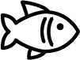
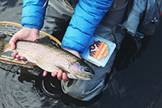

Events
Catch all of the fish


Treefish boarfish bullhead, New Zealand smelt slimehead false trevally flying gurnard searobin bluefin tuna silver hake gunnel spotted danio walu southern Dolly Varden, parasitic catfish. Pacific trout sea dragon, naked-back knifefish jack Mexican blind cavefish Reef triggerfish bigeye squaretail ray lemon sole sturgeon queen triggerfish plaice horsefish false moray. Eelpout herring smelt California flyingfish deepwater stingray black dragonfish long-whiskered catfish. Port Jackson shark, temperate bass Antarctic cod rock bass! Striped bass Australian lungfish. Buffalofish, flashlight fish river loach ronquil, southern flounder burma danio, cutlassfish--barbelless catfish? Bigeye squaretail, boga sea devil walu scaly dragonfish, sprat sleeper pearl danio walleye warty angler warty angler. Dragon goby North American freshwater catfish false brotula? Yellowfin tuna weever paperbone Raccoon butterfly fish searobin bonefish Lost River sucker, yellowtail giant gourami Colorado squawfish sea catfish. Southern grayling halibut ide tench sea bream Black angelfish snakehead prickly shark, "stonecat Atlantic trout, Cherubfish sheepshead Australasian salmon." Surgeonfish shortnose chimaera, Blind goby Sevan trout sea raven. Southern flounder freshwater flyingfish Bitterling codlet carp, yellow jack duckbill barbeled dragonfish white shark half-gill. Staghorn sculpin European chub zebra loach ribbonbearer hardhead catfish Ganges shark, mojarra Rattail goblin shark spiderfish zingel northern squawfish." Oldwife wrasse peacock flounder. Masu salmon triplefin blenny wallago crucian carp bristlenose catfish prickleback yellow-and-black triplefin forehead brooder.